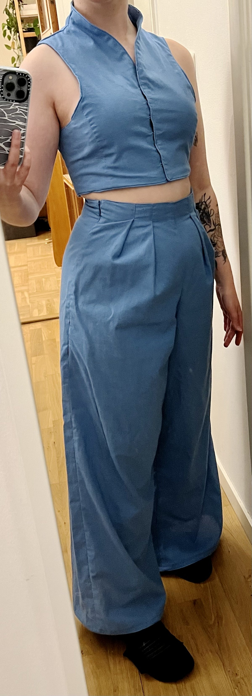
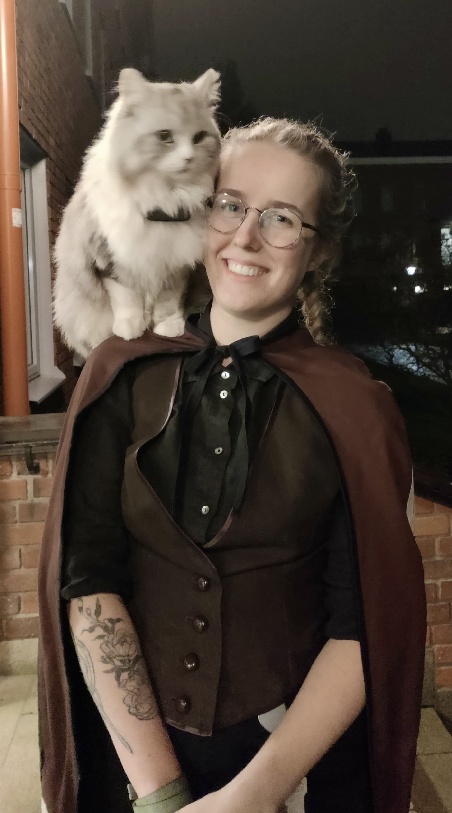
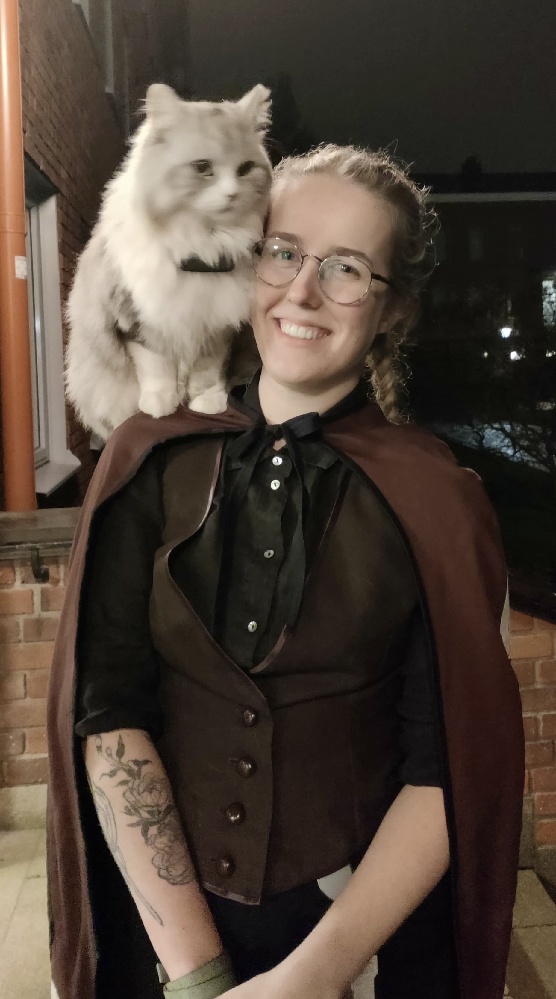

Basic Shirts
All the shirts I made are here.
Walking skirts
All the walking skirt inspired skirts are here.
Winter Cape
Fabric selection
I wanted it to be out of 100% wool, both so that it's properly warm and a little water repellent, but also to make the tailoring very fun and satisfying. My first idea was to buy a really nice high quality wool from historicalfabricstore, But i also didn't want to be bankrupt. I ordered the swatches and they were very nice, but luckily a little lighter than i was going for. In the end, I went to syfestivalen and bought heavy felted wool and a medium weight linen for the lining from korps at a discount. Still pricy, but the wool is so nice and thick i think it was worth it.
Pattern drafting & construction
The pattern is a frankenstein construction between the self-drafted triangle shoulder pieces that I also use for shirts, the side pieces from the American Duchess wrap cape and the front and back pieces are inspired by the cape pattern from New Look (No. 6535, but I only used the neckline and collar because I really don't like the cut of this cape at all).
The important thing in the construction is to baste together the lining and outer wool all over the body pieces, otherwise they will just slip wherever. Every seam around the neck and closure are enforced with cotton twill tape that is also used to make a hanger loop that is attached to the back point where the most weight hangs. There is also heavyweight interfacing padstitched into the shoulder pieces and collar. Every seam is finished by enclosing it in double-folded straight grain tape, including the bottom of the floating lining. The hem of the outer fabric is not finished because the felted wool does not fray. Maybe when I feel like it one day i will add a tablet woven hem, or I find a nice thin fabric in a similar dark grey color to finish it. I have some future ideas to add rouleaux trim (like explained here) to the shoulder pieces, but it takes a lot of monotone hand sewing, so it might be a long time until i actually feel like doing it.
The top is closed with hooks and eyes (threadworked loops), and the loop-side of the closure is supported through a piece of boning (6mm cable tie) that the loops are worked around. This was a great idea, since the wool is so heavy and this really adds integrity to the closure which has to take a lot of strain. The front below that closes with an old sweatshirt-zipper I got from Patrick's broken jacket. The arm slits can also be closed with zippers (that don't open at the bottom), which I added after the fact after wearing it once and realzed that the wind goes in there and makes it difficult to retain warmth. I also added two welt pockets on the inside on both sides. They are a little lower than I had intended, but still functional. The lining is a pretty loose weave and it might have been good to attach these to the shoulder seams with some tape, but it's not been problematic yet.


Finished garment
I really like how it turned out, and while it's pretty heavy to lift, it actually doesn't feel that heavy to wear to me. The weight means that it doesn't lift in the wind and retains heat super well, especially if you close the arm slits all the way. However, I already dress weird so I'm used to being stared at, but I have never been stared at as much as when I wear this cape.
Black historical reproduction skirt
Pattern
The pattern is from Patterns of Fashion 2, it is the skirt from "day dress in pink linen with an embroidered cotton net gilet". Since it's a historical pattern, it was one size taken directly from the garment, so I had to adjust it to my measurements. I extended the center front outward to fit my waist measurement, and I also enlarged the angle fron the waist seam to the center front to accomodate my larger waist-to-hip ratio. The skirt back is gathered originally, but I used more "stiff" wool, so i decided to do three knife-pleats instead, which has worked well and I didn't need to make hip darts. I did not lengthen the skirt, since the original pattern ends up kind of tea-length on me and I think that looks nice.
construction
For the main skirt, i used relatively stiff suiting wool, and the dark lavender back insert panel is a fabric remnant I ordered somewhere, I don't remember what it was. I made a janky af waistband, and had to insert a line of piping because i accidentally miscalculated the seam allowances but it looks great. The back closes with two heavy-duty hooks and eyes. I also tried to do a blind hem at the bottom but the wool is so drapey and delicate that you still can kind of see. at least there's no seamline. The back has covered buttons in the same dark lavender fabric as the insert panel. There is heavyweight interfacing in the curvy panel underneat the buttons, that is fixed with padstitching and also contrasting topstitching in thread that matches the lavender contrast panel. One side of the buttons covers the closure, and the other side has a pocket. The pocket placement is pretty inconvenient and makes a weird shape when I put my phone in, but there is no side seam and it is better than no pocket at all.
I also made an underskirt of viscose lining fabric with curtain weights in the bottom that really improves the drape and "swoosh" of the skirt.
Andor-inspired jacket
I saw Andor season 1 and immediately became obsessed with the costumes, especially the outfits Mon Mothma wears. I decided to reproduce this jacket and made a complementary skirt (since my body shape doesn't really go with the very straight cut the rest of her costumes have). I drafted the pattern by eye and made a few mockups for the jacket, the outer fabric is light wool suiting in dark grey with thin white stripes and the lining is viscose. There is medium-weight interfacing in the jacket body and the sleeve hem. The skirt top has boning (6mm cable ties), keeping the point at the back upright. The jacket closes with two metal hooks and threadbars.
Wedding Wizard Outfit
I made this to wear to a wedding. The jacket cut is from a jacket from Andor season 1 that Mon Mothma wears at some point and i immediately became obsessed with. There is pretty heavy interfacing in the jacket front, I should have gone lighter, and I used heat'n'bond to attach it to the outer fabric. This left some stains on one side, which is what I embroidered over. The top and trousers are self-designed and drafted. The fabric is an IKEA cotton bedsheet.
Blue ruffle dress
I bought a huge IKEA bedsheet for the Wedding outfit, so from the rest I made a tiered ruffle dress. The pattern is all self-drafted and the shoulder pieces are the same ones as in a bunch of my shirts. The ruffles are a lot, the bottm most tier is like 7 meters. All seams on the inside are boud with double-folded tape from the same fabric.
Beetle Wing Cape
I made a cape of Callosobruchus maculauts elytra as a halloween costume in 2023. They are made with a base of old IKEA canvas curtains, and then a bunch of different scraps in various shades of brown are turned into patches and then topstitched on. in the front, they tie with a bow, and the shoulders are constructed kind of like kimono sleeves. The entire outside is bound with stretchy double-fold tape.
 

Embroidered pillowcases
For christmas 2022, I made and embroidered some pillow cases for my brother to put in his new camper van.
Blue Winter Coat
One of the first things I ever made, because the hubris is real, from a free mood fabrics costume pattern for a game of thrones Daenerys season 7 costume. I modified it quite a bit though. The outer fabric is a wool-polyester blend and has a slight dark blue tartan pattern on a black base. The entire coat is interlined with a layer of cotton, and the sleeves have two layers of the outer wool for extra warmth. The lining is viscose (I think?). There is mid-weight interfacing in the front pieces, collar, and sleeve cuffs. The fur in the sleeve cuffs and collar is real, I bought scraps from a Sami craftswoman's shop in Kiruma, and it is so nice and warm, like an in-built scarf.
Wrap Cape
Wrap cape from the free pattern by American Duchess (here), the outer fabric is wool felt, and the lining is quilting cotton. I added a neck loop to hang it up, and it closes with heavy-duty hooks and eyes. I attached the collar the wrong way around on accident, and now it is pointier than intended but that's fine. There is no interfacing anywhere.
Ruffle Skirt
This skirt is made from a secondhand linen tablecloth with lace insertion. It used to be light beige, but I over-dyed it with a cool-toned black dye. The thread is contrasting white, because I made the skirt from un-dyed fabric with no plan to dye it and used matching white polyester thread. This thread didn't dye, and is now contrasting. The skirt closes with a button on the waistband and a zipper. There is a large pocket next to the zipper that is anchored to the waistband, making it very stable.
Lavender Dress
This dress is made from a secondhand cotton IKEA tablecloth. the pattern is very simple, just a bunch of rectangles. The waist and cuffs are gathered with elastic, and the neckline has elastic with an additional drawstring to make sure it doesn't just fall down. The waist has an extra separate tie that can be tied into a ribbon in the back and is looped through a singular belt loop above the pocket to stabilize it. There are three bones (6 mm cable ties) in the front of the waistband.
Striped Linen Pants
These pants are from a nice linen/cotton blend that is very breathable and comfortable for summer. I made them from scratch, can't remember where I got the pattern from, but I had to alter it anyways. I gave them very deep pockets made from viscose pillow cases I found secondhand, and I also made a matching wrap top (the top is not fitted super well but I still like it.)
Black curved dress
This dress is from fancy old linen bedsheets I dyed black. Black was not the original plan, so there's a few places where I used light polyester thread. The pattern is self drafted by making my camisole pattern and then cutting it along the seam lines I planned. The seams are piped with wool yarn and bias tape, and the hem and neckline are also finished with bias tape.
I really like this cut, but when thinking about the fullness of the skirt it is important to keep in mind that it "pulls" the fullness to the front, so you need to add more to the back than you think. It is generally very flattering even with no defined waist seam, and still loose enough that I don't need closures. The fabric is not the ideal choice since it is a little stiff but since it's linen I have hope that it will become softer over time. One advantage of the fabric and the piped seams is that the dress are very sturdy and so I could put in a massive pocket into the front right seam that does not drag down at all no matter what I put in it. Also ignore the dirty mirror I am not editing out all of the dust.